Guía de usuario e infraestructura técnica para residentes, comité de administración y soporte técnico.
Guía detallada de navegación por secciones para vecinos, comité y administración del condominio Casas del Parque 7.
La plataforma digital oficial del condominio Casas del Parque 7 (146 casas) permite a los vecinos reportar situaciones, proponer sugerencias y a la administración gestionarlas con total transparencia.
Es una aplicación web progresiva (PWA) de servidor cero impulsada por PostgreSQL / Supabase, diseñada para conectar de forma directa a los 146 propietarios con la administración y el comité de convivencia.
La plataforma cuenta con tres roles diferenciados. La navegación y las acciones disponibles cambian automáticamente según el rol con el que se inicie sesión.
| Rol | Acceso a pestañas | Acciones principales |
|---|---|---|
| Vecino | Resumen, Reportar, Sugerir, Mis Reportes, Mis Sugerencias, Estadísticas. | Crear reportes y sugerencias con foto; consultar únicamente sus propias solicitudes y novedades. |
| Comité | Reportes, Sugerencias, Estadísticas (comunidad completa). | Visualizar todas las solicitudes de la comunidad, cambiar estados, responder a vecinos y archivar. |
| Administración | Todo lo anterior + Panel de Usuarios. | Gestión global + asignación de roles a perfiles y borrado definitivo de registros. |
| Acción en la plataforma | Vecino | Comité | Admin |
|---|---|---|---|
| Crear reporte o sugerencia propia | ✔ | – | – |
| Ver sus propios reportes y sugerencias | ✔ | – | – |
| Ver todos los reportes y sugerencias de la comunidad | – | ✔ | ✔ |
| Cambiar estado (En revisión / Resuelto) y enviar respuesta | – | ✔ | ✔ |
| Archivar registros (ocultar de la vista activa) | – | ✔ | ✔ |
| Borrar definitivamente registros | – | – | ✔ |
| Asignar o modificar roles de los usuarios | – | – | ✔ |
| Exportar estadísticas y listas a CSV / Excel | ✔ | ✔ | ✔ |
admin) puede modificar roles.
Punto de entrada seguro a la plataforma. Permite iniciar sesión, registrar nuevos vecinos validados por casa y recuperar contraseñas.
Se ingresa con correo y contraseña. Si la cuenta fue creada con contraseña por defecto, el sistema exige cambiarla antes de ingresar.
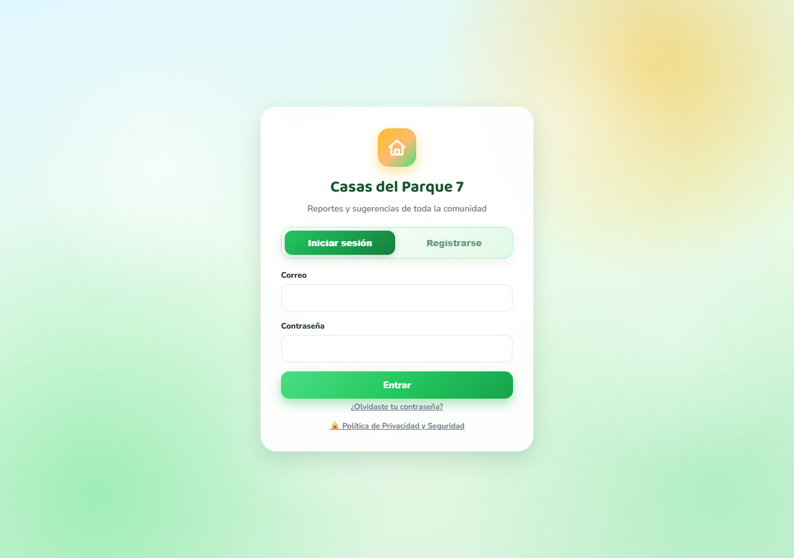
Registro abierto: el vecino selecciona su casa (1 a 146). La BD valida automáticamente el cupo máximo de 2 vecinos por casa con anti-spam.
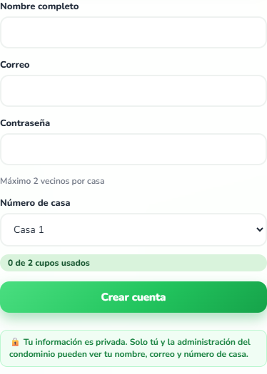
El vecino solicita un enlace a su correo registrado para restablecer su clave de forma segura sin intervención de terceros.
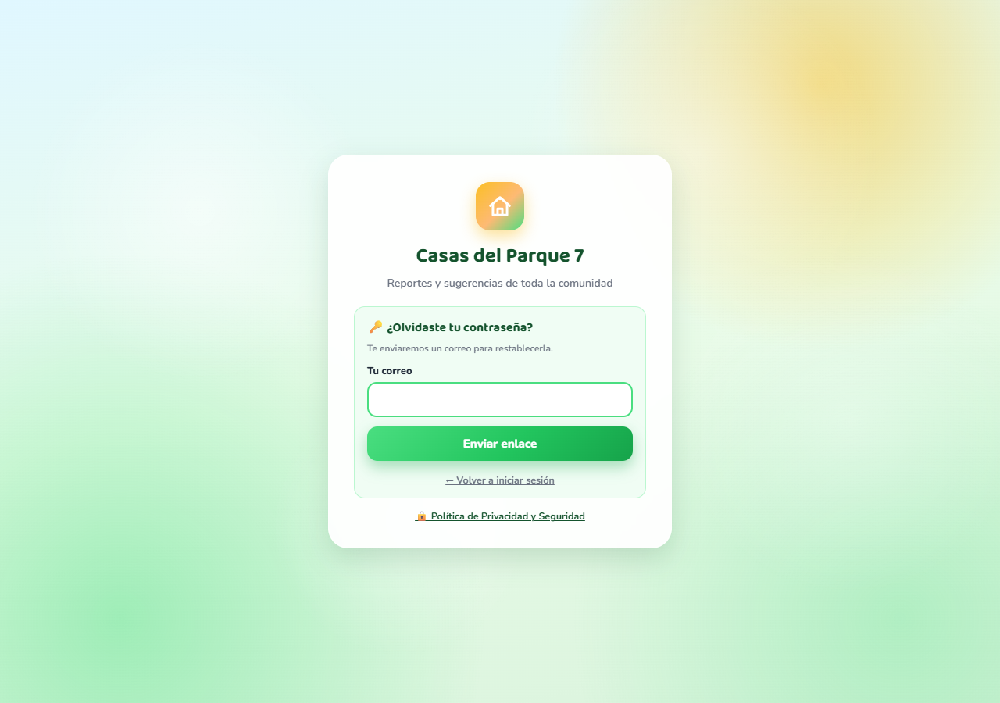
Credenciales de ejemplo utilizadas para la elaboración de este manual y pruebas del panel:
| Rol | Correo | Propósito |
|---|---|---|
| Admin | demo@casasdelparque.cl | Cuenta demo para administración y comité. |
Vista principal para residentes del condominio. Permite revisar el estado general de la comunidad y enviar reportes o sugerencias.
El vecino accede a un panel con el contador de sus solicitudes personales (abiertas y resueltas) junto a métricas generales del condominio.
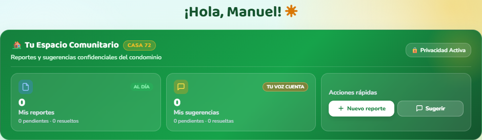
Permite ingresar incidencias seleccionando entre 8 categorías (seguridad, luminarias, ruidos, etc.), título, descripción y 1 foto adjunta opcional.
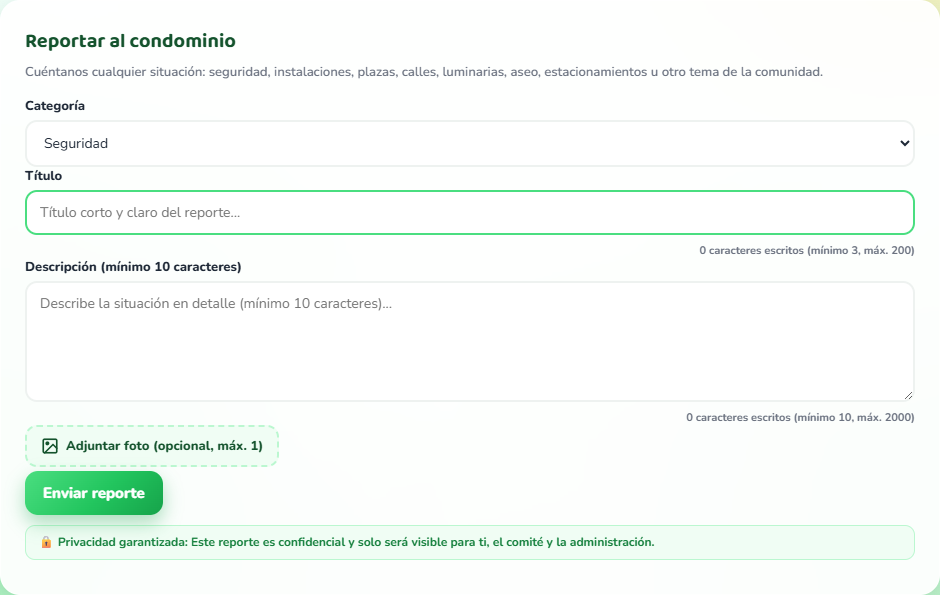
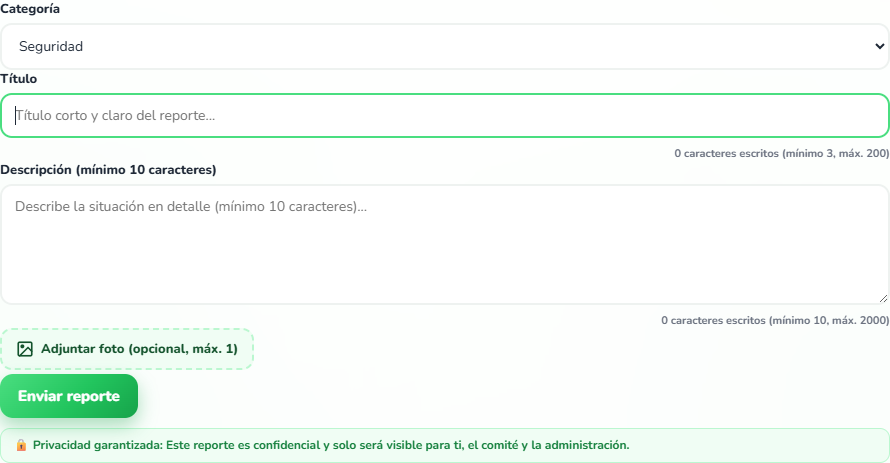
Espacio para proponer mejoras en la infraestructura o convivencia del condominio, con soporte de foto adjunta.
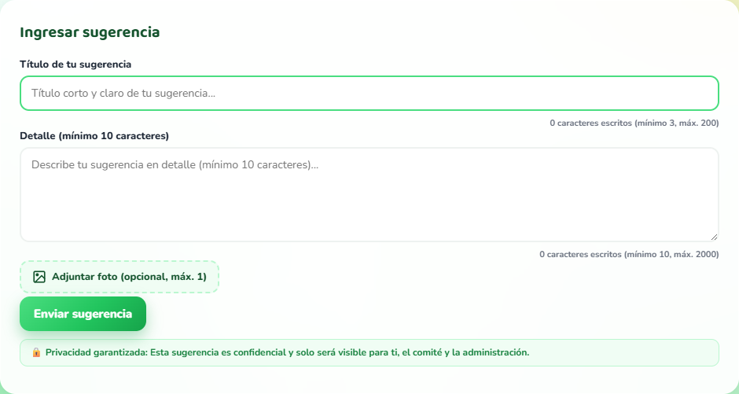
Gestión privada de solicitudes enviadas y consulta transparente de estadísticas comunitarias.
Historial 100% privado. Cada vecino ve únicamente sus solicitudes enviadas, la fecha, el estado actualizado por la administración y la respuesta emitida.
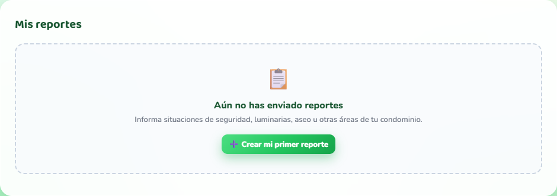
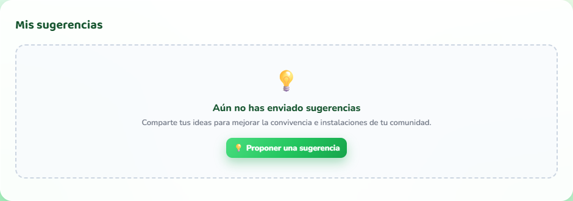
Gráficos interactivos agregados sobre el estado de reportes y sugerencias en la comunidad, exportables a Excel/CSV.
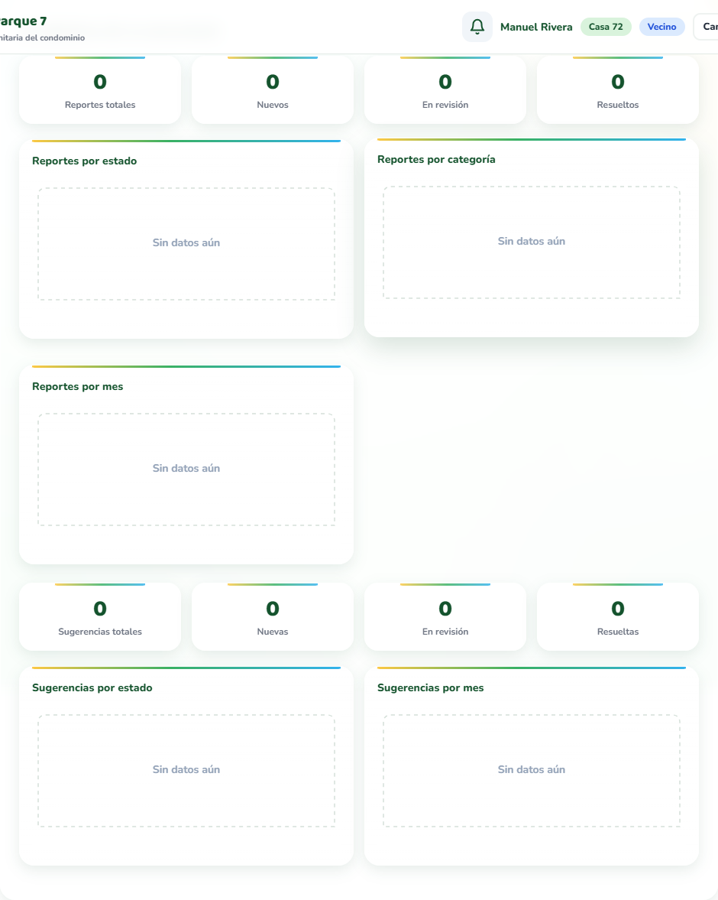
Centro de mando exclusivo para los roles Comité y Admin. Permite gestionar todas las incidencias del condominio.
Visión global e indicadores clave: vecinos registrados, casas ocupadas, total de reportes pendientes y resueltos.
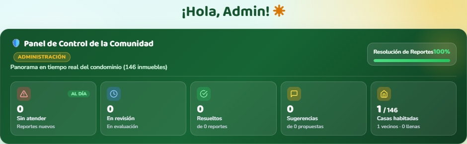
Panel de control avanzado con herramientas de filtrado y atención de incidencias:
| Estado | Significado e impacto |
|---|---|
| Nuevo | Ingresado sin gestión previa. |
| En revisión | En proceso de atención. |
| Resuelto | Atendido; elimina foto adjunta. |
| Archivado | Oculto de lista activa. |
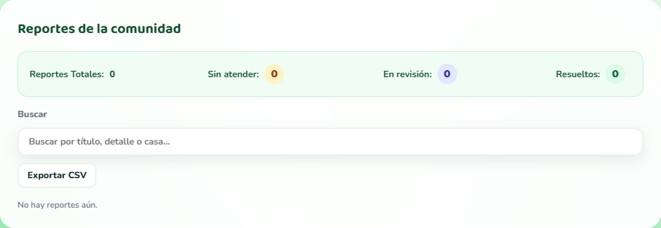
Gestión de sugerencias, control de perfiles de usuario y analítica avanzada con gráficos agregados del condominio.
Revisión de propuestas comunitarias, respuesta oficial y cambio de estado.
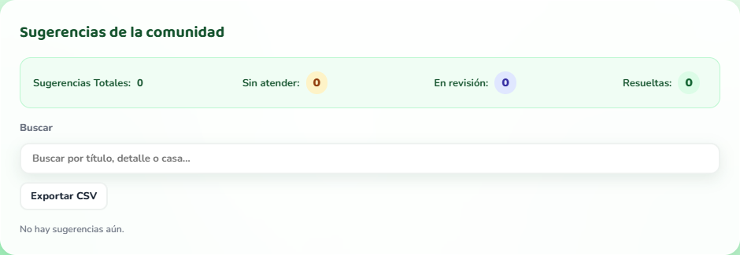
Asignación de roles a perfiles registrados (Vecino / Comité / Admin).
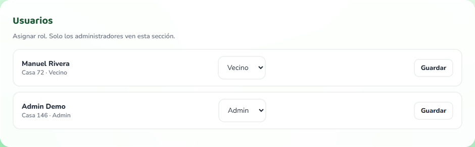
Analítica completa en alta resolución: gráficos por categoría, severidad, mes y distribución por casa de toda la comunidad.
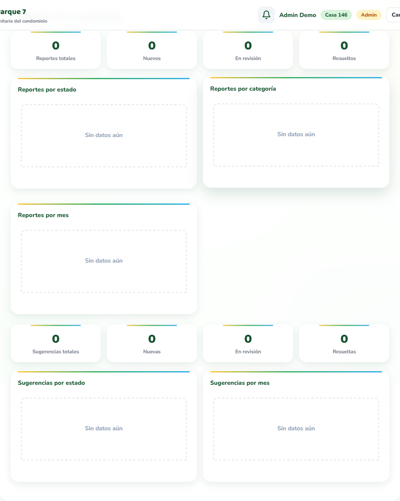
Características técnicas y funcionales que operan de forma transversal para todos los usuarios de la plataforma.
Sistema interno de notificaciones (sin depender de correos o push). Revisa novedades cada 60s. Marca tarjetas en amarillo al haber cambios de estado o respuestas.
Todos los listados de reportes, sugerencias y estadísticas se pueden descargar en formato .csv (UTF-8 con BOM para apertura directa en Microsoft Excel). La descarga cuenta con desinfección automática de fórmulas: cualquier texto que comience con =, +, - o @ se escapa para evitar ejecuciones maliciosas en planillas.
El modelo de seguridad descansa en RLS (Row Level Security) de PostgreSQL: la base de datos, y no el navegador, garantiza que cada usuario acceda únicamente a los datos autorizados.
| Mecanismo | Descripción técnica y funcionamiento |
|---|---|
| Aislamiento de datos (RLS) | Los vecinos solo consultan sus propios registros (creado_por = auth.uid()). Comité y admin acceden mediante funciones RPC con validación estricta de rol. |
| Cupo de casas atómico | La función registrar_perfil reserva las plazas por casa (máx 2) con bloqueos de asesoría de PostgreSQL, evitando dobles asignaciones simultáneas. |
| Anti-spam de registro | Trigger sobre auth.users que limita a máximo 10 intentos de registro por correo por hora mediante la tabla intentos_registro. |
| Bucket de fotos privado | Almacenamiento privado: lectura restringida al autor y admin mediante URL firmadas con expiración temporal. Reglas: solo imágenes de hasta 5 MB. |
| Sin secretos en frontend | La anon key es pública por diseño; el 100% de los permisos de lectura, escritura y actualización son forzados en PostgreSQL. |
| CSV seguro anti-injection | Exportador que limpia prefijos de fórmulas (=, +, -, @) para evitar la ejecución de código en Microsoft Excel. |
| Cabeceras HTTP y CSP | Content-Security-Policy estricto por <meta> y cabeceras de servidor Vercel (nosniff, X-Frame-Options, Permissions-Policy). |
| Cambio clave obligatorio | Cuentas creadas por la administración con clave genérica son forzadas a renovarla inmediatamente en su primer ingreso. |
Especificación técnica del backend Supabase / PostgreSQL para referencia de la administración y soporte técnico.
| Tabla | Propósito y contenido |
|---|---|
| casas | Catálogo de las 146 casas numeradas del condominio Casas del Parque 7. |
| profiles | Perfil de cada usuario: nombre, casa, rol (vecino, comite, admin), cambio de clave pendiente, último acceso. |
| reclamos | Reportes de la comunidad: categoría, severidad, título, descripción, estado, respuesta, fotos y casilla de guardia. |
| sugerencias | Sugerencias de mejora: título, descripción, estado, respuesta y fotos. |
| intentos_registro | Registro anti-spam de intentos de creación de cuenta por correo electrónico. |
| storage.objects | Bucket privado reportes con los archivos fotográficos adjuntos. |
| Función RPC | Acceso | Propósito |
|---|---|---|
| mi_rol() / mi_casa() | Authenticated | Devuelven el rol y la casa del usuario activo para validar interfaz. |
| registrar_perfil() | Vecino autenticado | Crea el perfil de vecino verificando el cupo atómico de 2 por casa. |
| cupos_por_casa() | Público | Devuelve el número de vecinos registrados por casa para la interfaz. |
| asignar_rol() | Admin | Cambia el rol de un usuario en la tabla de perfiles. |
| marcar_clave_cambiada() | Authenticated | Actualiza la bandera de contraseña renovada tras el primer login. |
| mis_novedades() | Authenticated | Retorna las solicitudes del vecino modificadas en los últimos 3 días. |
| reclamos_detalle() | Comité / Admin | Lista completa de reportes con datos del autor y casa para gestión. |
| sugerencias_detalle() | Comité / Admin | Lista completa de sugerencias con autor y estado. |
| responder_reclamo() | Comité / Admin | Cambia estado, graba respuesta oficial y elimina la foto al resolver. |
| archivar_reclamo() | Comité / Admin | Realiza el archivado lógico (soft delete) del reporte. |
| borrar_reclamo() | Admin | Elimina físicamente el registro de la base de datos. |
| estadisticas() | Comité / Admin | Genera los datos agregados por mes, categoría, severidad y casa. |
Organización de archivos del repositorio, componentes del sistema y ficha de resumen técnico.
| Archivo / Directorio | Rol en la arquitectura del sistema |
|---|---|
| index.html | Pantalla pública de inicio de sesión, registro de vecinos, recuperación de clave y Política de Privacidad. |
| app.html | Panel principal spa (Resumen, Vecino, Comité, Admin), barra de navegación, modal de novedades y formularios. |
| css/style.css | Sistema de diseño completo: componentes visuales, glassmorphism, responsive móvil y barra fija inferior. |
| js/app.js | Lógica del panel dinámico: resumen, notificaciones, renderizado de listas, fotos y exportador CSV. |
| js/auth.js · index.js · stats.js | Conector Supabase, manejo de sesión, trazado de gráficos HTML5 Canvas y helpers puros. |
| sql/schema.sql | Script SQL idempotente completo: tablas, triggers, funciones SECURITY DEFINER y políticas RLS. |
| sw.js · manifest.webmanifest | Service Worker para soporte offline del shell y manifiesto de la aplicación PWA. |
| tests/ | Suite de pruebas automatizadas en Node.js (helpers puros + pruebas smoke HTML/JS). |
cdp7-v2.0.29 · Documento generado con capturas reales y verificado.